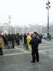

Elõször is kiválasztottam a katalógusból a megfelelõ darabot. Nagyon sokféle történelmi ruha volt.
Ez a kedves hölgy hozta ki a raktárból a kért ruhákat.

No, itt lennék, a megfelelõ ruházatban. Jó, egy kicsit eltér a Waffen SS stílusától, de csak egy kicsit.

Aki a virágot szereti, ugyebár...

Edi volt olyan kedves, és elvitt a Hõsök terére kocsival. A fotózás feladata is õrá hárult.
Mielõtt nekikezdtünk volna kis ellendemonstrációnknak, még egyszer elmagyarázta, hogy engem itt agyon fognak verni. Sebaj, mondtam, a zsidók is agyon akartak.

Akkor hát elõre!

A tömegbõl barátságos arcok meredtek felénk. Edi itt meg is állt, neki elég volt az extrémsportból...
... én azért megnéztem, mi van beljebb.

Én

Én és a nácik

A nácik megemlékeznek
A biztonsági törpenyugdíjas támadása

Biztonsági törpenyugdíjas

"Te zsi... zsiddó!"

"... és dögöljetek meg, büdös zsidók!"